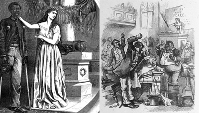
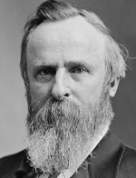

|
In the South, there were two parties, but no two party system, because one
party (the Democrats) refused to recognize the legitimacy of the other (the
Republicans). Is essence, the Republicans were looked on as an occupying force
whose authority was rejected. From the beginning the Republicans had tried to
gain legitimacy. They lavished attention on white Southerners, especially
elites. They also feverishly pursued railroad building, the only policy that
seemed sure to gain them white support. They backed away from policies that
might have offended well-to-do whites, such as land redistribution. The
Republicans were damaged heavily, though, by the collapse of their railroad
policy. They were also put in a poor position by terrorist organizations like
the Ku Klux Klan. The Klan made it look like the Republicans had no control, and
if the Klan was put down by force, it made it look like the Republicans could
only govern with force. So, Republicans sought legitimacy, but every step they
took to protect themselves and their organization invariably confirmed their
inadequacy.
The "New Departure" and the Election of 1872
This paradox that the Republicans faced led to the development of two
competing factions within the party, those who favored coercion and those who
favored conciliation. This struggle became so intense that it split the party in
the South, and in 1872 many of those who favored conciliation bolted to a fusion
Republican-Democratic ticket. This fit in with a national defection of liberal
Republicans, who were horrified by the scandals of the Grant administration. The
Liberal Republicans ran ultra-liberal Horace Greeley as their candidate. Thus,
white Southern Democrats were put in the position of endorsing Greeley, a
notorious Democrat hater, since Greeley was the only person running against
Ulysses S. Grant. Nationally, Greeley was crushed and on the local level, the
Republicans managed mostly to hold on, but anybody who thought the Republicans
might be a viable Southern party was shown otherwise, and almost all whites left
the party.
The election of 1872 was the culmination of a philosophy termed the "New
Departure". In the election of 1868, the Southern Democrats had decided to
mobilize all their resources to defeat Grant, most notably the Klan. The
Democrats were successful in keeping Grant from winning some states, but in
general they failed. This defeat had convinced Democratic politicians that their

A Ku Klux Klansman in Tennessee
|
only hope was to work within the system, to accept Reconstruction and black
suffrage. Abandoning their destructive, obstructionist policies allowed the
Democrats to become involved in the emerging economic development of the region
and to attract moneyed interests that might otherwise have supported the
Republicans. It also allowed them to win over many former Whigs. Some New
Democratic apostles even felt that there was a possibility of winning over
blacks, and thus reducing racial tensions, though the blacks didn't buy it. The
election of 1872, with the liberal Republican defections, was a test for the New
Departure, and Democratic defeat caused it to be a big labeled a big failure.
There was clearly no way that a viable white, Democratic coalition could be
built under the conditions established by Southern Republican governments. So,
Southern Democrats began to look for another option.
The critics of the New Departure were known as Bourbons, a reference to the
family who returned to the French throne after Napoleon was deposed, having
learned nothing and forgotten nothing. Rather than playing down the differences
between Republicans and Democrats, and trying to work within the system set up
by Reconstruction governments, they wanted to accentuate the differences, the
most obvious being the constituents' race. The problem was that in many states,
blacks were a majority, and were going to defeat a party that endorsed white
supremacy. So, the Bourbons included organized terror as part of their strategy.
Groups such as the White League in Louisiana, the Rifle Clubs in Mississippi and
the Red Shirts in South Carolina terrorized and demoralized black Republicans.
This approach toppled the Republicans once and for all. Since they had
vanquished the Republican oppressors, Democrats now claimed an unquestioned
right to rule.
Democrats in Power
Once in power, the Democrats had three immediate policy objectives. First,
they consolidated their power by removing Republican holdovers, such as judges.
Second, they rewrote the state constitutions, forbidding things like internal
improvements and reducing the responsibilities of governments. Finally, they
passed laws tightening control over the black labor force. Interestingly, the
Democrats did not immediately attempt to circumscribe African Americans' civil
rights, for fear of federal reprisal. They needn't have worried, for while
Reconstruction was being dismantled, the Federal government was taking a passive
approach. Grant had a policy of allowing the Southern Republican governments,
which he viewed as corrupt and unworthy, to fend for themselves, particularly
during his second term. This was not entirely Grant's fault, it reflected the
general ambivalence and hostility to federal involvement in the South that was
beginning to permeate the North. Discrimination and racism were the norm in the
North, and most Northerners saw no reason to waste effort and risk disunion
trying to make things otherwise in the South. Like emancipation, whatever things
|

The cartoons of Thomas Nast reflect the changes in Northern
sentiment toward African Americans that occurred during the period of
Reconstruction. The cartoon on the left, published on August 5, 1865, depicts a
black man as a soldier and upstanding citizen. The cartoon on the right,
published nearly six years later, on March 14, 1874, shows black legislators as
travesties of democratic government.
|
African Americans achieved were generally seen as by-products, not ends in
themselves. Suffrage, for example, had been granted because it was the only way
to create a Republican constituency in the South.
By 1870, the Republican party was becoming increasingly more conservative, as
many of the ideological notions around which the party had been organized
evaporated. The party had been started as an antislavery party, an issue that
ended in 1865. Another key issue had been the free labor ideology, which
essentially said that the South would be a much better place if only they had
free labor, for the possibility of achieving material independence through hard
work was an important way to motivate workers and to keep the economy strong.
Once the slaves had been freed, this didn't exactly prove to be the case.
Further, even in the North, the free labor ideology was dying, workers were
finding that they were living their whole lives as laborers, rather than
achieving material independence, which was presumably the motivation for
laborers to work their hardest. So the Republicans had to make a decision. They
could follow the radicals, and continue to find new ideas to pursue and mobilize
voters around. This approach, however, required constant agitation and
threatened to destabilize the party. The other option was to go with the
moderates; to rely on their current support and identity, and to rally voters
around the things the Republican party had come to represent. They chose this
approach, and as a result, Reconstruction seemed more like a past accomplishment
rather than an ongoing project.
The Election of 1876 and the End of
Reconstruction
By the time that the presidential elections were held in 1876, the Republican
move toward a more conservative political philosophy was essentially complete.
|

Rutherford B. Hayes
|
In the election that year, Republican Rutherford B. Hayes faced Democrat Samuel
B. Tilden. Due to fraud, the electoral votes of four states were contested. If
Tilden had received one more electoral vote, he would have become president. A
commission of 15 men; 7 Democrats, 7 Republicans and 1 Independent was set up to
investigate and award the contested votes. At the last minute, the Independent
member had to resign and was replaced by a Republican. The committee promptly
voted 8 to 7 to give all the votes to Hayes. Democrats refused to recognize the
vote, and a constitutional crisis loomed. Less than a week before the
inauguration the issue was resolved, and Hayes was allowed to become president.
Shortly thereafter, President Hayes withdrew the remaining federal troops in the
South. Some historians have claimed that the Democrats and the Republicans had
some sort of 'corrupt bargain', though the evidence is inconclusive, and the
move definitely reflected the political climate at the time. In any case, this
marked the formal end of Reconstruction.
Source: Christopher Bates for the History 139A website
|